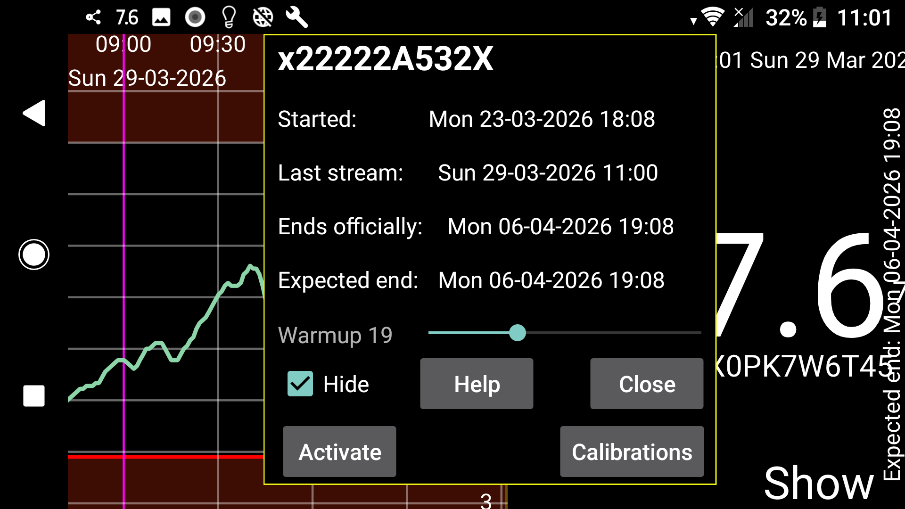

Displays start, last stream, last scan and expected and official end times of the sensor.
Warmup: For Sibionics and Linx/Aidex X sensors you can change the number of minutes of the warmup period. All functions will ignore data during the warm up period: curve on the screen, statistics, exported data and data visible in the web server. Also, retroactively.
Hide: Checking hides curve. Besides unchecking, you can also make the curve visible again by pressing “Show” at the lower right of the screen.
Calibrations: If you have specified the blood glucose label in left menu→Settings→Calibration and entered blood glucose measurements with left middle menu→New amount ,which were not excluded, you can press on the “Calibrations” button to get a list of made calibrations. See: https://www.juggluco.nl/Juggluco/index.html#calibration
Activate: For terminated sensors the “Activate” button is displayed. By pressing this button you can use the sensor again without scanning the data matrix on the package. You can also use it for Libre 2 and 3 sensors, but if you have scanned the sensor with Juggluco on another phone, always need to scan the sensor again via NFC to get the sensor back.